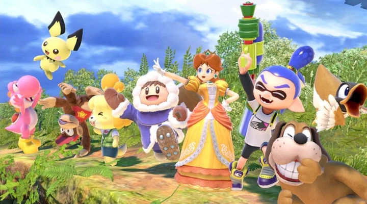
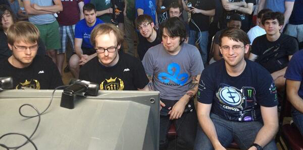
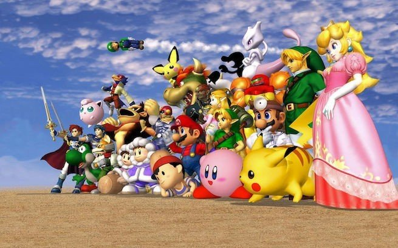

As a Party Game
 Super Smash Bros. is a great game to play with family or a group of friends. Fighting games usually have a high skill ceiling, in which those with greater skill will always do better than those that don't understand the mechanics of the game as well. But with party-mode settings, Smash Bros becomes a game for anybody. With many items and abilities involved that are not within the competitive mode, there are things that will beat competitive players regardless of their skills with the game.This game puts the challenge of friendship to the test, as the ultimate combinations and craziest items can cause a lot of rage to arise in one person. Jokes aside, this can be a great way to loosen up and get people that may not know each other something to converse about, and can help friendships form, whether it is through the rage of the game, or through trying to play together as a team in different modes.
As an E-Sport
 The competitive scene in Super Smash Bros. is surprisingly big. They hold many tournaments every year, and for multiple installations of the game through the years. There are handfuls of people that attend these tournaments worldwide, and many of these competitors do it as their main job.Many of the smaller competitors make a living by streaming their content on twitch.tv, where a lot of their income is through donations and advertisements on their channel. Bigger competitors, however, receive a lot of the same types of donations and advertisement money, but if they are a good enough player, they could be sponsored by bigger companies such as Monster, Red Bull, Logitech, etc. The competitive scene playing mostly an older game requires them to use older CRT televisions in order to play the game, which may seem strange to people outside of the inner circle of fans.
Rise in Popularity
 Super Smash Bros. really had its boost in popularity due to the 2001 iteration called Melee. It came out only 2 months after the release of the Nintendo Gamecube, and it quickly became and maintained its role as the best selling game on the console. It had a lot of strong competition with other well-selling games on other consoles, but it retained a good following that stuck with it.It was in 2003 that Melee had its first tournament appearance. The novelty of Melee containing so many fan favorite characters allowed a subset of fans to create a competitive scene out of it. Before, it wasn't seen as anything more than a party game, but today it is considered more of a fighting game than a party game by most of the hardcore fans of the series. Over the years, advanced techniques were created and eventually they cemented Super Smash Bros. Melee as a tournament staple at video game conferences.
-
For More Information:
- Official Discussion Forum
- Smash Bros. Subreddit
- Official Super Smash Bros. Website